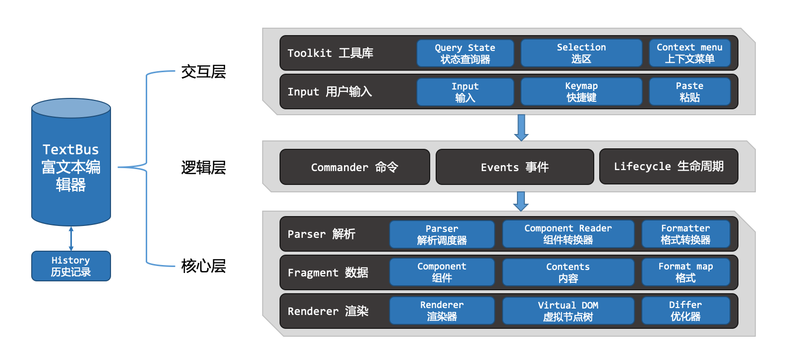
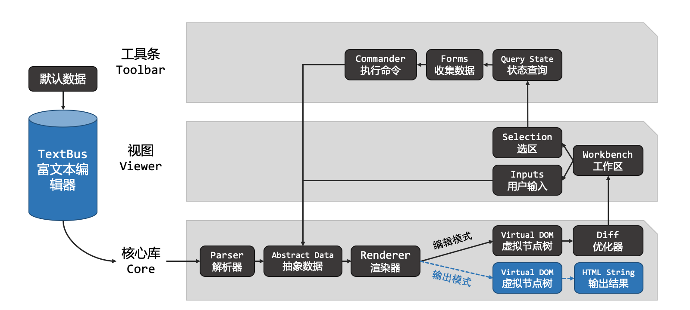

架构设计
TextBus 采用 MVC 设计，将 DOM 数据转换为抽象的 Fragment 对象，并通过自实现 Selection，隔离了浏览器的 Selection 及 Range 对象，使后续功能开发，再也不用关心不同浏览器的差异，整体设计架构如下：

定制与扩展
TextBus 设计之初就充分考虑了可定制性与扩展性，为了践行这一设计，TextBus 核心模块只有组织与调度的能力，其它所有的功能都是只是遵循扩展接口的外部函数或类，也就是说，没有这些外部函数或类，TextBus 核心模块就只剩一个空的骨架，完成不了任何事情。
在默认情况下，一般会调用 createEditor 函数来创建一个 TextBus 实例。当我们查看 createEditor 函数的内容时会发现，该函数只是把一系列的接口实例等配置在可选项里而已。
交互流程
TextBus 并未采用 DOM 的 contentEditable 属性来实现编辑功能，所以 TextBus 并不能直接编辑 HTML 内容，而是通过编辑抽象数据，并通过 Renderer 类渲染到 DOM 中。当初始化 TextBus，或给 TextBus 传入一段 HTML 文本时，TextBus 会首先通过 Parser，把 HTML 转换为 TextBus 定义的数据，然后再进行后续的操作。

数据结构
TextBus 的数据类型只有两种，一种是 Component，一种是 string。数据结构也只有两种，一个是 Component，一个是 Fragment。格式信息被当作额外数据，Component 中固定的格式由 Component 自行保存与渲染，Fragment 中的格式则由 TextBus 抽象成 FormatMap，保存在对应的 Fragment 中，它们的结构如下：